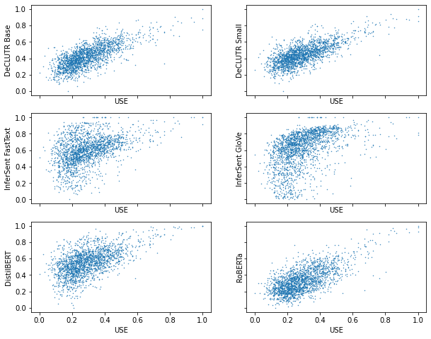

import os
import pandas as pd
import pickle
import numpy as np
import seaborn as sns
import matplotlib.pyplot as plt
from sklearn.metrics.pairwise import cosine_similarityscatter
scatter plot
df = pd.read_csv('A Christmas Carol.csv')df2 = df[:7].Tdf2.columns = df2.iloc[0]df2.drop(index = 'Unnamed: 0', inplace=True)fig, ax = plt.subplots(3,2, sharex=True, sharey = True, figsize = (10,8))
ax[0][0].tick_params(
axis='x', # changes apply to the x-axis
which='major', # both major and minor ticks are affected
bottom='off', # ticks along the bottom edge are off
# top='off', # ticks along the top edge are off
)
ax[0][0].scatter(df2['USE'], df2['DeCLUTR Base'], s=0.2)
# ax[0][0].set_xticks([])
ax[0][0].set_xlabel('USE')
ax[0][0].set_ylabel('DeCLUTR Base')
ax[0][1].scatter(df2['USE'], df2['DeCLUTR Small'], s=0.2)
ax[0][1].set_xlabel('USE')
ax[0][1].set_ylabel('DeCLUTR Small')
ax[1][0].scatter(df2['USE'], df2['InferSent FastText'], s=0.2)
ax[1][0].set_xlabel('USE')
ax[1][0].set_ylabel('InferSent FastText')
ax[1][0].tick_params(axis='x', bottom = 'off')
ax[1][1].scatter(df2['USE'], df2['InferSent GloVe'], s=0.2)
ax[1][1].set_xlabel('USE')
ax[1][1].set_ylabel('InferSent GloVe')
ax[2][0].scatter(df2['USE'], df2['DistilBERT'], s=0.2)
ax[2][0].set_xlabel('USE')
ax[2][0].set_ylabel('DistilBERT')
ax[2][1].scatter(df2['USE'], df2['RoBERTa'], s=0.2)
ax[2][1].set_xlabel('USE')
ax[2][1].set_ylabel('RoBERTa')
plt.savefig('2.png', dpi = 300, bbox_inches='tight')
# plt.scatter(x = df2['USE'], y=df2['DeCLUTR Base'], )